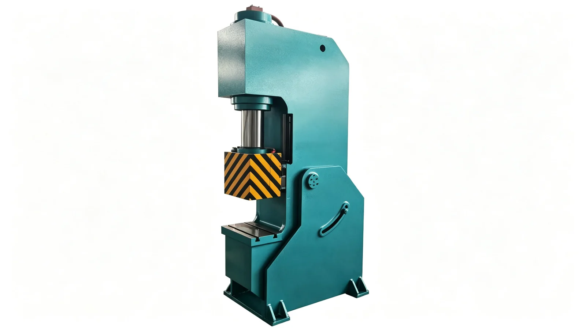

Complementary Machines
Machines that work alongside the four-column press.

Rim making · expanding
Vertical Rim Expanding Press
2,000 kN vertical press for expanding rims.

Rim making · flattening
Rim Flattening and Valve Hole Punching Press
Dedicated flattening and valve hole station.

Rim making · rolling
Rim Weld Seam Rolling Machine
Rolls the weld seam flush before the press work.